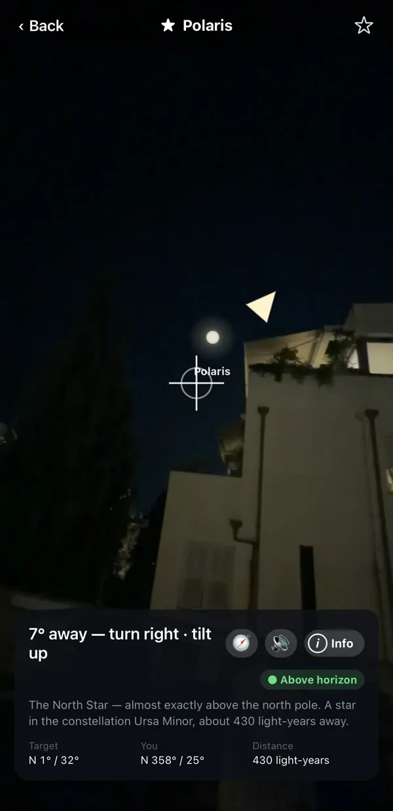
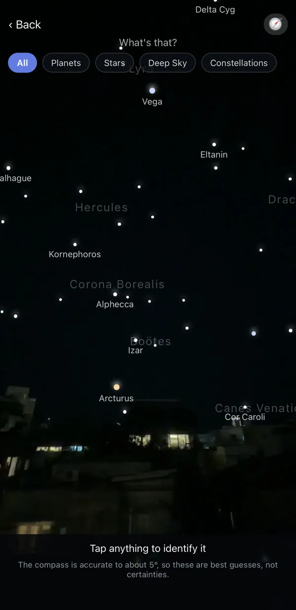
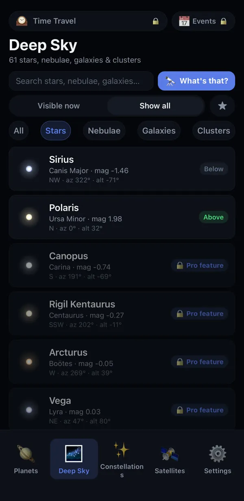
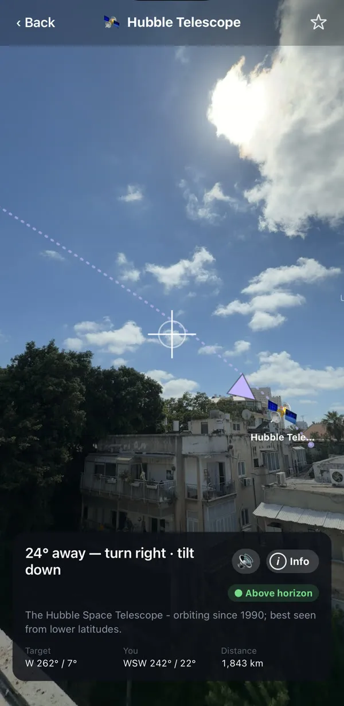
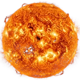

Find Saturn in ten seconds.
Hold up your phone. Follow the arrow. Every planet, star and satellite, named in your language.
Try it. Move across the sky.
This is how the app guides you. A dashed line points the way, and the ring turns green when you are on target.
Point your phone up. Know what you see.
Planet Pointer guides your camera to any planet, star or satellite, and names every light in the sky.
Point. Follow. Locked.
A guide arrow, a dashed line, and a ring that turns green when you are on target.


constellations
Drawn on the real sky, with the myths behind them.
Your location never leaves your phone.
Every calculation runs on the device. Works offline, no account.
It speaks your language
Built in and free. 66 more languages with Pro.
Pay once. Keep it forever.
An introductory price for our first stargazers, with every future update included. No subscription. The Sun, Moon and planets are always free.
What's up there.
Planets, stars, galaxies, nebulae, star clusters and satellites. Every one of them, the app can point you to.
Deep-sky wonders
The faint, far things beyond the stars: clouds of glowing gas, other galaxies, and swarms of stars born together.

Satellites, live
The International Space Station, Hubble, China's Tiangong, Starlink, weather satellites and Israel's Amos. Tracked in real time, with the next time each one passes over you.


Sun, Moon and 7 planets
Where each one is right now, how bright, and how far.
Brightest stars
Sirius, Vega, Betelgeuse, Polaris and the other stars you actually notice.
Constellations
Every one, drawn on the live sky, many with the myth behind the shape.
Questions people ask.
Is Planet Pointer free?
Yes. The camera guide, the Sun, the Moon, all seven planets, the ISS and Hubble are free forever, plus two famous objects in every category. Pro is a one-time purchase (launch price $4.99) that unlocks every star, constellation, deep-sky object and satellite. There is no subscription.
Does it work without internet?
Yes. Every position is calculated on your phone, so it works in the desert or at sea. The internet is only used to refresh satellite orbits and to download extra languages.
Does the app collect my location?
No. Your location is used on your phone to point you at the sky. It is never recorded or sent anywhere, and there is no account.
How accurate is it?
Planets and stars are calculated to a fraction of a degree. The limit is the phone compass, which is good to about five degrees, so identify mode tells you how sure it is instead of guessing. A figure-eight calibration is built in.
Can it show me the International Space Station?
Yes. The ISS is tracked live, the app points you to it, and it lists the next times it passes over you, including whether it will be visible.
Is it available for iPhone?
Yes. Planet Pointer is on the App Store for iPhone and on Google Play for Android.
79 languages. Probably yours.
Every screen, every planet and every constellation, translated.